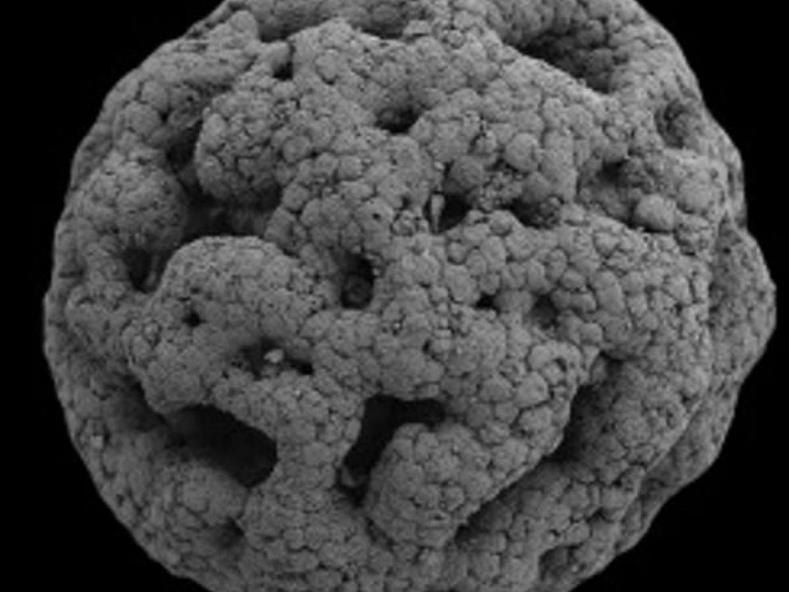

I.
COSMOGONIC EMBRYOLOGY

We all come from a walled garden
Darwinian evolution by natural selection is inherently transgressive. Humanity comes not from a cultivated, synthetic space (The Garden of Eden) but instead from the wilderness and from interpenetration with other species.

A fossilized embryo from the primordial ediacaran period
The kingdom Animalia can be traced back to the ediacaran period, or the geological era prior to the Cambrian Diversification Event. "Until recently, very little was known about the deep evolutionary origins of retroviruses. However, advances in genomics and bioinformatics have opened the way for great strides in understanding. Recent research employing a wide variety of bioinformatic approaches has demonstrated that retroviruses evolved during the early Palaeozoic Era, between 460 and 550 million years ago, providing the oldest inferred date estimate for any virus group." 5
While the animals originated in the ediacaran period, they diversified and become far more complicated in the Cambrian Explosion. Not coincidentally, the retroviruses originated shortly before this diversification event.
"The long-term impact of retroviruses on vertebrate evolution is twofold: first, as with other viruses, retroviruses act as agents of selection, driving the evolution of host genes that block viral infection or that mitigate pathogenesis, and second, through the phenomenon of endogenization, retroviruses contribute an abundance of genetic novelty to host genomes, including unique protein-coding genes and cis-acting regulatory elements." 6
Retroviruses are unique among biological agents in that they are inseperably intertwined with their host. They don't just use their host as means for reproduction, they also modify their host. If this modification occurs in a germline cell, all the offspring of that organism will carry the retrovirus' genes. A significant portion of the human genome is made up of virus info-fossils.
It all started with a drop of oil
The history of life is the history of the cellular membrane. Micelles: globules of oil in water.